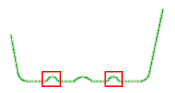
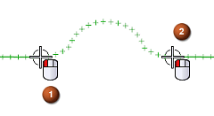
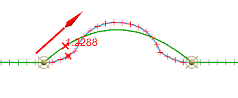
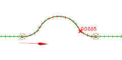
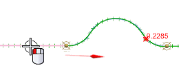
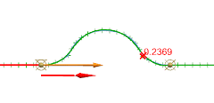
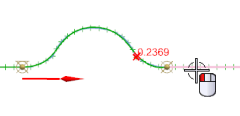
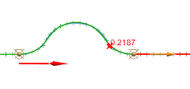

将使用样条来拟合钟形区域中的点，并且拟合样条将与两侧的直线相切。

在拟合曲线对话框中，设置如下参数：
类型 = 拟合样条
在目标组中：源 = 成链的点
选择链的起点和终点，如图所示：


默认方法为阶次和段数，但您更感兴趣的是将这些点使用较宽松的公差生成一条更光顺的样条，而不是控制样条的段数。
在参数化组中，设置如下参数：
方法 = 阶次和公差
公差 = 0.1

注意到位于起点处的矢量与拟合直线并不相切，因此您需要添加一些端点约束。
在点约束组的端点约束子组中，确定选择的是起点，然后点击指定相切。
选择如图所示直线。


在端点约束子组中，点击终点。
选择如图所示直线。


点击应用。
对右侧扫描点重复上述步骤，以创建拟合样条并将它们约束到相应的拟合直线。